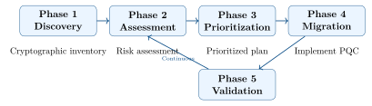

Chapter 5: PQC Migration Strategy¶
5.1 Why Migration Is Urgent¶
The transition to post-quantum cryptography is not a future concern — it is an active imperative for any organization handling data with long-term sensitivity. The “Harvest Now, Decrypt Later” threat means that adversaries are collecting encrypted traffic today for future decryption.
The Migration Urgency Matrix
Prioritize migration based on data sensitivity and system lifetime:
-
Critical: Classified data, long-lived PKI roots, financial records \(>\)10 years — migrate now
-
High: Healthcare data, government infrastructure, defence systems — migrate by 2026
-
Medium: Enterprise data, customer PII, internal communications — migrate by 2028
-
Lower: Short-lived session keys, public content — migrate before 2030
5.2 The NIST NCCoE Migration Framework¶
NIST’s National Cybersecurity Center of Excellence (NCCoE) published SP 1800-38 (“Migration to Post-Quantum Cryptography”) defining a five-phase framework:

5.2.1 Phase 1: Cryptographic Inventory (Discovery)¶
Identify all cryptographic assets in the organization:
-
Application discovery: Enumerate all applications using cryptography.
-
Protocol analysis: Find all TLS, SSH, IPsec, S/MIME deployments.
-
Certificate inventory: Catalog X.509 certificates (keys, algorithms, expiry dates).
-
Key management: Document HSMs, key stores, key derivation.
-
Data classification: Which data is sensitive for 10+ years?
-
Third-party dependencies: Vendor libraries, SDKs, cloud services using classical crypto.
5.2.2 Cryptography Bill of Materials (CBOM)¶
A CBOM is a structured inventory of all cryptographic assets, analogous to a Software Bill of Materials (SBOM):
{
"cbom_version": "1.4",
"metadata": {"component": "payment-service", "version": "3.2.1"},
"components": [
{
"type": "cryptographic-asset",
"name": "TLS Key Exchange",
"algorithm": "ECDH",
"curve": "P-256",
"location": "nginx 1.24 / TLS 1.3",
"quantum_vulnerable": true,
"replacement": "ML-KEM-768",
"priority": "HIGH",
"data_sensitivity": "customer-transactions",
"retention_years": 7
},
{
"type": "cryptographic-asset",
"name": "Code Signing Certificate",
"algorithm": "ECDSA",
"curve": "P-384",
"expiry": "2027-03-15",
"quantum_vulnerable": true,
"replacement": "ML-DSA-65",
"priority": "CRITICAL"
},
{
"type": "cryptographic-asset",
"name": "Session Encryption",
"algorithm": "AES-256-GCM",
"quantum_vulnerable": false,
"notes": "Retain; quantum-safe"
}
]
}
CBOM tools: Microsoft Cryptography Scanner, IBM’s Crypto Inventory, NIST’s NCCoE tools, Cryptosense Analyzer, PQShield PQAdvisor.
5.2.3 Phase 2: Risk Assessment¶
For each cryptographic asset, assess:
-
Quantum Vulnerability: Does it use RSA, ECDH, ECDSA, or DH? If yes, it’s vulnerable.
-
Data Sensitivity: Is the protected data sensitive beyond 10 years?
-
HNDL Exposure: Is the data transmitted over untrusted networks (internet, satellite)?
-
Migration Complexity: How hard is it to replace this component? Custom HSM firmware? Vendor dependency?
-
Interconnected Systems: Which other systems depend on this cryptographic component?
5.2.4 Phase 3: Prioritization¶
| Priority | Sensitivity | Exposure | Examples |
|---|---|---|---|
| P1 (Now) | Critical | Public internet | PKI root CAs, TLS key exchange for classified data |
| P1 (Now) | Any | Public internet | Long-lived private keys with HNDL risk |
| P2 (2026) | High | Internal network | Internal PKI, VPN key exchange |
| P3 (2027) | Medium | Internal | Application-level encryption at rest |
| P4 (2028) | Lower | Offline | Backup encryption, cold storage |
| P5 (2030) | Any | Any | All remaining classical-only systems |
5.3 Crypto-Agility¶
Crypto-agility is the ability to quickly replace cryptographic algorithms without major system redesign. It is the key architectural principle for long-term PQC resilience.
5.3.1 Crypto-Agility Design Patterns¶
from abc import ABC, abstractmethod
from enum import Enum
import oqs # liboqs Python wrapper
class KEMAlgorithm(Enum):
ECDH_P256 = "ECDH-P256"
ML_KEM_768 = "ML-KEM-768"
ML_KEM_1024 = "ML-KEM-1024"
X25519_MLKEM768 = "X25519MLKEM768" # Hybrid
class KEMProvider(ABC):
@abstractmethod
def keygen(self) -> tuple[bytes, bytes]: ... # (public, private)
@abstractmethod
def encapsulate(self, pk: bytes) -> tuple[bytes, bytes]: ... # (ct, ss)
@abstractmethod
def decapsulate(self, sk: bytes, ct: bytes) -> bytes: ... # ss
class LiboqsKEM(KEMProvider):
def __init__(self, alg: str):
self.kem = oqs.KeyEncapsulation(alg)
def keygen(self):
pk = self.kem.generate_keypair()
return pk, self.kem.export_secret_key()
def encapsulate(self, pk: bytes):
ct, ss = self.kem.encap_secret(pk)
return ct, ss
def decapsulate(self, sk: bytes, ct: bytes):
return self.kem.decap_secret(ct)
class KEMFactory:
_registry: dict[str, type] = {}
@classmethod
def register(cls, name: str, provider: type):
cls._registry[name] = provider
@classmethod
def create(cls, alg: KEMAlgorithm) -> KEMProvider:
name = alg.value
if name not in cls._registry:
# Default to liboqs for PQC algorithms
return LiboqsKEM(name)
return cls._registry[name]()
# Usage -- algorithm can be changed by config, not code
config_kem = KEMAlgorithm.X25519_MLKEM768 # From config file
kem = KEMFactory.create(config_kem)
pk, sk = kem.keygen()
ct, ss = kem.encapsulate(pk)
5.4 Protocol Migration¶
5.4.1 TLS 1.3 Migration¶
TLS 1.3 migration requires updating both key exchange (KEM) and authentication (signature):
-
Key Exchange: Replace ECDHE with X25519MLKEM768 (hybrid) or ML-KEM-768 (pure PQC).
-
Server Certificate: Replace RSA/ECDSA with ML-DSA-65 or SLH-DSA.
-
Client Authentication: Update client certificates if mutual TLS is used.
# /etc/nginx/nginx.conf (with OQS-enabled OpenSSL)
server {
listen 443 ssl;
ssl_certificate /etc/ssl/mldsa65.crt;
ssl_certificate_key /etc/ssl/mldsa65.key;
# Prefer hybrid PQC, fallback to classical
ssl_ecdh_curve X25519MLKEM768:x25519:prime256v1;
# Require TLS 1.3 only
ssl_protocols TLSv1.3;
# Modern cipher suite (AES-256 for PQC era)
ssl_ciphers TLS_AES_256_GCM_SHA384:TLS_CHACHA20_POLY1305_SHA256;
}
5.4.2 SSH Migration¶
# OpenSSH 9.0+ supports ML-KEM hybrid key exchange
# /etc/ssh/sshd_config (server)
KexAlgorithms mlkem768x25519-sha256,curve25519-sha256,ecdh-sha2-nistp256
# Client connection with PQC KEM
ssh -o KexAlgorithms=mlkem768x25519-sha256 user@server
# Generate ML-DSA host key (when supported)
ssh-keygen -t mldsa65 -f /etc/ssh/ssh_host_mldsa65_key
5.4.3 PKI and X.509 Migration¶
The PKI migration is the most complex aspect, involving certificate hierarchies:
-
Root CA: Generate new ML-DSA-87 root CA (highest security level).
-
Intermediate CAs: New ML-DSA-65 intermediate CAs under PQC root.
-
End-entity certificates: Issue ML-DSA-65 certificates for servers and clients.
-
Cross-certification: Run parallel classical + PQC hierarchies during transition.
-
OCSP/CRL: Ensure revocation infrastructure supports PQC.
-
HSM update: Upgrade or replace HSMs to support PQC key generation.
# Generate ML-DSA-87 root CA private key
openssl genpkey -algorithm ML-DSA-87 -out root_ca_key.pem \
-provider oqsprovider -provider default
# Self-signed root CA certificate (10-year validity)
openssl req -new -x509 -key root_ca_key.pem \
-out root_ca.pem \
-days 3650 \
-subj "/CN=PQC Root CA/O=Example Corp/C=US" \
-extensions v3_ca \
-provider oqsprovider -provider default
# Generate ML-DSA-65 intermediate CA
openssl genpkey -algorithm ML-DSA-65 -out int_ca_key.pem \
-provider oqsprovider -provider default
openssl req -new -key int_ca_key.pem \
-out int_ca.csr \
-subj "/CN=PQC Intermediate CA/O=Example Corp"
# Sign with root CA
openssl x509 -req -in int_ca.csr \
-CA root_ca.pem -CAkey root_ca_key.pem \
-out int_ca.pem -days 1825 \
-provider oqsprovider -provider default
5.4.4 Dual-Certificate Approach¶
During the transition, running classical and PQC certificates in parallel maintains compatibility:
# nginx dual-certificate configuration
server {
listen 443 ssl;
# Classical certificate (for legacy clients)
ssl_certificate /etc/ssl/ecdsa_p384.crt;
ssl_certificate_key /etc/ssl/ecdsa_p384.key;
# PQC certificate (for PQC-capable clients)
ssl_certificate /etc/ssl/mldsa65.crt;
ssl_certificate_key /etc/ssl/mldsa65.key;
# TLS will automatically negotiate using the client's capability
ssl_protocols TLSv1.2 TLSv1.3;
ssl_ecdh_curve X25519MLKEM768:x25519:prime256v1;
}
5.5 Migration Timeline¶
| Timeline | Action | Priority |
|---|---|---|
| Now (2025) | Complete cryptographic inventory (CBOM) | All |
| Now (2025) | Assess HNDL exposure; classify data sensitivity | All |
| Now (2025) | Evaluate PQC-ready vendor products and libraries | All |
| Now (2025) | Deploy hybrid PQC in TLS for internet-facing services | High/Critical |
| 2025–2026 | Update PKI root CAs to PQC | Critical |
| 2025–2026 | Crypto-agility refactoring of custom crypto code | High |
| 2026–2027 | Migrate all internet-facing TLS to hybrid/pure PQC | High |
| 2027–2028 | Migrate internal services, VPN, email, SSH | Medium |
| 2028–2029 | Update embedded systems, IoT, firmware | Medium |
| 2029–2030 | Remove all classical-only algorithms from production | All |
| Post-2030 | Classical algorithms deprecated per NIST IR 8547 | Mandatory |
5.6 Vendor and Product Readiness¶
| Vendor/Product | Category | PQC Status | Since |
|---|---|---|---|
| Chrome 131+ | Browser | X25519MLKEM768 in TLS | 2024 |
| Firefox 132+ | Browser | ML-KEM-768 in TLS | 2024 |
| Cloudflare | CDN/TLS | X25519MLKEM768; \(>\)50% PQ traffic | 2024 |
| AWS (AWS-LC) | Crypto library | ML-KEM, ML-DSA (FIPS validated) | 2024 |
| Microsoft SymCrypt | Crypto library | ML-KEM, ML-DSA | 2024 |
| Signal | Messaging | PQXDH (ML-KEM + X25519) | 2023 |
| Apple iMessage | Messaging | PQ3 (ML-KEM-based) | 2024 |
| OpenSSL 3.5+ | Crypto library | Native ML-KEM, ML-DSA | 2025 |
| wolfSSL 5.x | Embedded TLS | ML-KEM, ML-DSA | 2024 |
| mbedTLS 3.6+ | Embedded TLS | ML-KEM-768, ML-DSA | 2024 |
| PQShield HSM | Hardware security | Full NIST PQC suite | 2024 |
5.7 Summary¶
-
The HNDL threat makes PQC migration urgent today, not when CRQCs arrive.
-
The NIST NCCoE SP 1800-38 framework provides a practical 5-phase migration methodology.
-
Cryptographic inventory (CBOM) is the essential first step — you cannot protect what you don’t know.
-
Crypto-agility (algorithm-agnostic design patterns) enables rapid algorithm replacement.
-
Hybrid PQC (X25519MLKEM768) is the recommended transition approach for TLS: security against both classical and quantum attackers with backward compatibility.
-
PKI migration is the most complex piece: start with root CA updates and plan for dual-certificate operation.
-
NIST IR 8547 mandates RSA/ECDH/ECDSA deprecated by 2030 and disallowed by 2035.